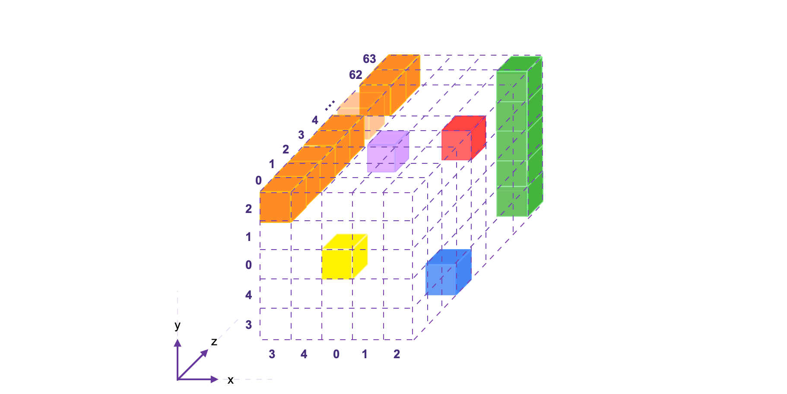
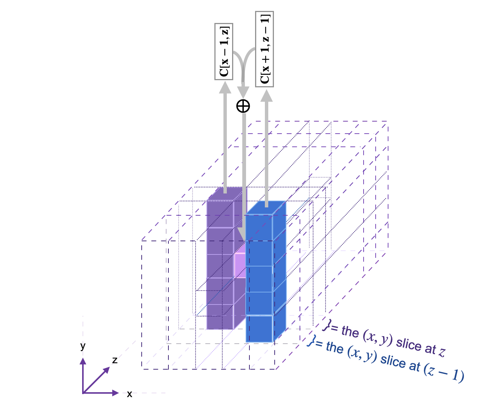
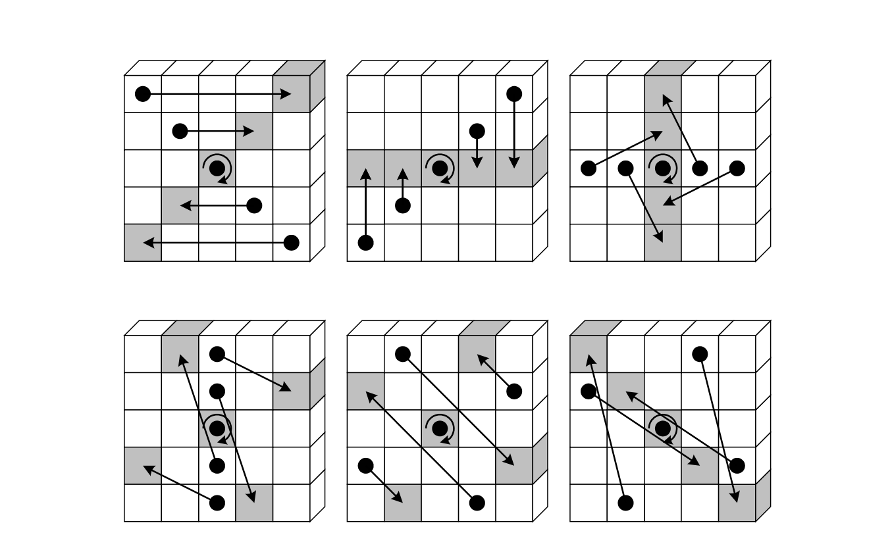
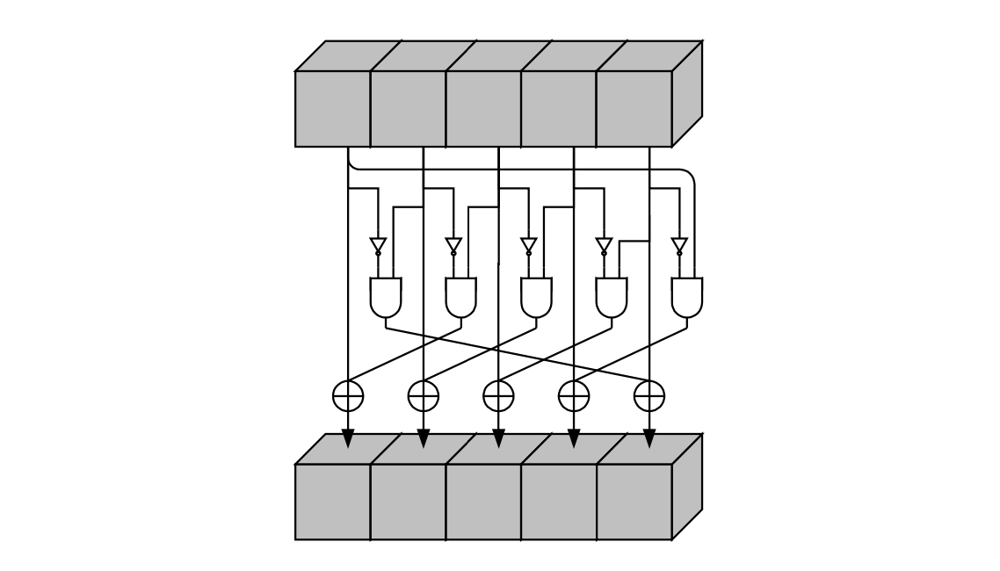
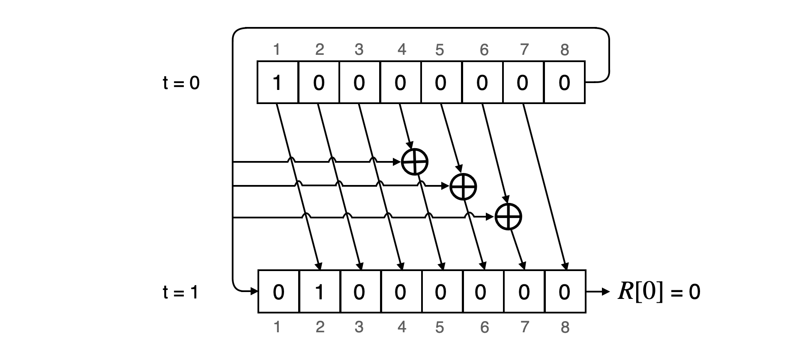
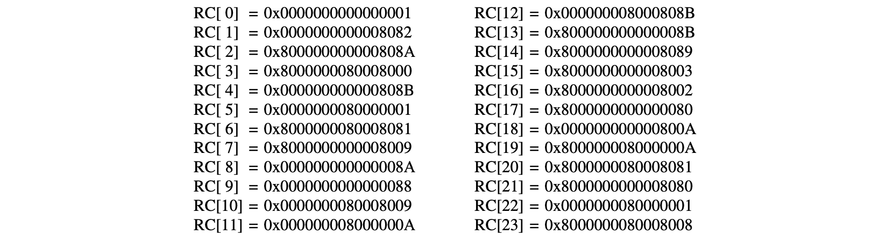

Keccak-f State Machine
The Keccak-f State Machine (SM) is one of the secondary zkProver state machines. It computes hashes of message strings, and proves correctness of computation of these hashes, at the request of the Main SM.
Although the original KECCAK hash function has a straight forward architecture, the Keccak-f SM is not a simplistically automated or state machine version of the cryptographic hash function.
Firstly, the Keccak-f SM is implemented as a gates state machine. A binary circuit, operating on a bitwise basis.
Secondly, as it relates to the Main SM, the Keccak-f SM is realised within a framework encompassing four other, supporting state machines; the Padding-KK SM, the Padding-KK-Bit SM and the Bits2Field SM.
Thirdly, especially in the first version of the zkEVM public testnet, the Keccak-f circuit is implemented such that its single run is effectively equivalent to running forty-four (\(44\)) hashing circuits at once. See the Bits2Field SM for further details on how this parallelism technique is enforced.
This document contains a brief outline of the \(\texttt{Keccak-f}\) circuit, and a detailed description of the known and standard Keccak-256 hash function, with specific parameters as used in the zkEVM implementation.
Keccak-f Circuit
The \(\texttt{Keccak-f}\) circuit has two types of gates, types \(\mathtt{0}\) and \(\mathtt{1}\), corresponding to the two binary operations it performs, the \(\mathtt{XOR}\) and \(\mathtt{ANDP}\).
The \(\texttt{Keccak-f}\) executor builds the constant polynomials, \(\mathtt{ConnA}\), \(\mathtt{ConnB}\) and \(\mathtt{ConnC}\), and these are to be tested if they match their corresponding polynomials, \(\mathtt{kA}\), \(\mathtt{kB}\) and \(\mathtt{kC}\).
Also, for any \(\texttt{op} \in \{ \mathtt{XOR}, \mathtt{ANDP} \}\) we have
The \(44\) bits are loaded into the state machine as \(11\)-bit chunks.
In \(\texttt{keccakf.pil}\), each committed polynomial \(\texttt{a[4]}\) is expressed in terms of 4 chunks, where each is \(11\) bits long. The corresponding a \(44\)-bit array can be expressed as, $$ \texttt{a44} = \texttt{a}[3] \cdot 2^{33} + \texttt{a}[2] \cdot 2^{22} + \texttt{a}[1] \cdot 2^{11} + \texttt{a}[0] $$ where \(\texttt{a}[i]\) for each \(i \in \{ 0, 1, 2, 3 \}\).
The verification involves a copy constraint
and a Plook-up as,
for each \(i \in \{ 0, 1, 2, 3 \}\).
This covers the \(\texttt{Keccak-f}\) circuit in a nutshell together with its PIL code. See the codes sm_keccakf.js and keccakf.pil.
KECCAK-256 Hash Function
There are seven \(\texttt{Keccak}\)-\(f\) permutation functions, each indicated by \(\texttt{Keccak}\)-\(f[b]\), where \(b = 5\times 5\times 2^l\) is the size of the internal state of the hash function, for \(0 \leq l \leq w\).
The zkProver's KECCAK State Machine is a verifiable automisation of a \(\texttt{Keccak}\)-\(f\) permutation function, which amounts to an irreversible scrambling of bits of a string \(\mathbf{s} \in \mathbb{Z}_2^b\), where \(b = 5\times 5\times 2^6 = 1600\).
The EVM utilises the KECCAK-256 hash function, which is a sponge construction with capacity \(c = 512\) bits, and denoted by KECCAK\([512]\). That is, the KECCAK-256 notation puts emphasis on the \(256\)-bit security level, while the KECCAK\([512]\) notation seeks to depict the actual capacity of \(512\) bits.
Bitrate and Capacity
Although the internal state is \(\mathtt{1600}\) bits, \(\texttt{Keccak}\)-\(f\) intakes a fixed number of bits as input, called the \(\texttt{bitrate}\) (or simply, \(\texttt{rate}\)) and it is denoted by \(\texttt{r}\). In our specific case, the bitrate \(\texttt{r} = 1088\), whilst the capacity, \(\texttt{c} = 512\).
The size of a single output is \(\texttt{r} = 1088\) bits. However, users can choose their required length by truncating the output, which is of length \(\texttt{d}\), where \(\texttt{d} = 1088*k\), for some positive integer \(k\).
The \(\texttt{Keccak}\)-\(f\) permutation used in KECCAK\([c]\) is KECCAK-\(p[1600, 24]\) (See NIST SHA-3 Standard).
Thus, given an input bit string \(\mathtt{M}\) and a output length \(\mathtt{d}\), KECCAK\([c](M, d)\) outputs a \(d\)-bit string following the previous sponge construction description.
KECCAK-f Padding Rule
The \(\texttt{Keccak}\)-\(f\) permutation operates on a state of width \(b = 1600\) bits (or \(200\) bytes) and a bitrate $$ \mathtt{r = b - c = 1600 - 512 = 1088}\ \texttt{bits } \mathtt{= 136}\ \texttt{bytes} $$ But not every input string comes with this tailored bit-length.
Therefore, every input string is split into \(\mathtt{1088}\)-bit chunks, where padding is applied to the tail-end chunk with \(\mathtt{1088}\) bits or lesser.
The last ingredient we need to define in order to completely specify the hash function is the padding rule.
In KECCAK\([c]\), the padding \(\texttt{pad10*1}\) is used. If we define \(\mathtt{j = (-m-2) \mod{r}}\), where \(\mathtt{m}\) is the length of the input in bits, then the padding we have to append to the original input message is $$ \mathtt{P = 1 \mid\mid 0^{1088+j} \mid\mid 1}. $$
It should be noted that our construction does not follow the FIPS-202 based standard (a.k.a SHA-3). According to the NIST specification, the SHA3 padding has been changed to
The difference is the additional \(\mathtt{01}\) bits being appended to the original message, which were not present in the orignal KECCAK specification.
The Keccak-f Internal State
The \(\mathtt{1088}\)-bit (post-padding) chunks are provided sequentially, and one chunk at a time, into the \(\texttt{Keccak}\)-\(f\) permutation function, to be \(\texttt{XOR}\)ed with a given initialisation vector \(\texttt{IV}\) or intermediate states. The capacity bits are typically initialised to zero bits and are not affected by any external bits.
However, instead of a plain bit-string of length \(\mathtt{1600}\) bits, a state \(\mathbf{s}\) in the KECCAK SM is best visualised in 3D form as follows;
- Firstly, each bit is imagined as a cube,
- Secondly, the entire \(\mathtt{1600}\)-bit state is thought of as a 3-dimensional array of cubes (bits): \(\text{A}[5][5][64]\). That is, sixty-four (\(5 \text{-bit}\times 5\text{-bit}\))-blocks of bits (cubes).
See Figure 1 below, for a \(\mathtt{1600}\)-bit state array, displaying;
(a) The 64-bit lane \(\{[3,2,z]\}\) shown in orange, consisting of \(64\) bits, \(\mathtt{Bit}[3,2,0]\) to \(\mathtt{Bit}[3,2,63]\), and
(b) The 5-bit column \(\{[2,y,63]\}\) shown in green, consisting of \(5\) bits, \(\mathtt{Bit}[2,0,63]\) to \(\mathtt{Bit}[2,4,63]\).

A bit in the state \(\mathbf{s}\) can be denoted by \(\texttt{Bit}[x][y][z]\) as an element of the 3D-array state, but as \(\texttt{Bit}[x,y,z]\) to indicate its location in position \((x,y,z)\) with respect to the Catersian coordinate system.
The mapping between the bits of the state \(\mathbf{s}\), when written as a linear array of \(\mathtt{1600}\) bits, and the bits when \(\mathbf{s}\) is expressed as a 3-dimesnional array, is given by, $$ \mathbf{s}[64(5y + x) + z] \mapsto \mathtt{Bit}[x,y,z] $$ So then, the bit \(\mathtt{a} = \mathtt{Bit}[2,3,3]\) at coordinate \((2,3,3)\) is in fact the one-thousand-and-ninety-second bit of \(\mathbf{s}\), because \(64(5\cdot 3 + 2) + 3 = 64(17) + 3 = 1091\). This bit, \(\mathtt{a} = \mathtt{Bit}[2,3,3]\), is represented in Figure 1 above, by the blue cube. See more examples of this correspondence in Table 1, below.
Consider computing the \(\texttt{XOR}\) of all the 5 bits in the column \(\{[2,y,63]\}\) , the green column of Figure 1 above. If its bits are as given below, $$ \mathtt{Bit[2,2,63]} = 1,\ \mathtt{Bit[2,1,63]} = 1,\ \mathtt{Bit[2,0,63]} = 0,\ \mathtt{Bit[2,4,63]} = 0\ \text{ and }\ \mathtt{Bit[2,3,63]} = 1 $$ then the \(\texttt{XOR}\) of the column bits, denoted by \(C[2,63]\), is \(C[2,63] = 1 \oplus 1 \oplus 0 \oplus 0 \oplus 1 = 1\).
In our notation, a column is identified by the fixed \(x\)- and \(z\)- values. Hence the \(\texttt{XOR}\) of all the 5 bits in a column is denoted by \(\mathtt{C[x,z]}\). That is, $$ \mathtt{C[x,z]} = \mathtt{Bit[x,0,z]} \oplus \mathtt{Bit[x,1,z]} \oplus \mathtt{Bit[x,2,z]} \oplus \mathtt{Bit[x,3,z]} \oplus \mathtt{Bit[x,4,z]} $$
The KECCAK-f Rounds
The \(\texttt{Keccak}\)-\(f\) State Machine runs 24 rounds, each of which is but a composition of five step mappings; \(\mathtt{\theta}\), \(\mathtt{\rho}\), \(\mathtt{\pi}\), \(\mathtt{\chi}\) and \(\mathtt{\iota}\), denoted by
$$
\texttt{Rnd(A, ir)} = ι( χ( π( ρ( θ(A) ) ) ), \mathtt{ir})
$$
where \(\texttt{ir}\) is the round index, and in our case, \(0 \leq \texttt{ir} \leq 23\).
These step mappings are individually described in the subsections below. The following table illustrates how the output state of each step mapping is relayed to the next step mapping as its input state.
Henceforth, given a state value, the next value of the bit \(\text{A}[x,y,z]\) is denoted by \(\text{A}'[x,y,z]\). The code shown on the right side of Table 2 is keccakf.cpp.
The First Step Mapping \(\theta\)
The first step mapping, \(\mathtt{\theta}\), referred to as \(\texttt{KeccakTheta()}\) in keccak_f.cpp, can be described in three sub-steps;
Firstly, compute the \(\mathtt{XOR}\) of the bits in the \([(x-1)\text{ mod }5, z]\)-column,
and the \(\mathtt{XOR}\) of the bits in the \([(x+1)\text{ mod }5, (z-1)\text{ mod }64]\)-column,
Secondly, calculate the \(\mathtt{XOR}\) of the two column \(\mathtt{XOR}\)s;
Thirdly, compute the \(\mathtt{XOR}\) of \(\mathtt{D[x,z]}\) and the bit \(\mathtt{A[x,y,z]}\) of the current state value;
$$ \mathtt{A'[x,y,z] = {A}[x,y,z] \oplus {D}[x,z]} $$ See Figure 2 below, for an illustration of the \(\theta\) step mapping applied on one bit. (The diagram is taken from Keccak Reference 3.0.)
The code of the \(\theta\) step mapping is found here keccak_theta.cpp.

The Second Step Mapping \(\rho\)
The step mapping \(\rho\) does not change the value of the input bit, but simply moves it to another position along the \(z\)-axis. Since all operations along the \(z\)-axis are worked out modulo 64, the mapping \(\rho\) is therefore cyclic, and amounts to rotating each of the 64 bits in the same lane along the \(z\)-axis. It does this in three sub-steps;
- Set \(\mathtt{(x,y) = (0,1)}\),
- For \(t\) ranging from \(0\) to \(23\), set \(\mathtt{{A}'[x,y,z] = {A}\big[x,y,\big(z-(t+1)(t+2)/2 \big)\text{mod }64\big]}\),
- Set \(\mathtt{(x,y) = (y,(2x + 3y)\text{mod }5)}\).
Basically, \(\rho\) modifies the \(z\) coordinate of each bit, \(\mathtt{Bit}[x,y,z]\), by subtracting a specific offset constant \(\mathbf{K}\) modulo 64, where \(\mathbf{K} = (t+1)(t+2)/2\). See Table 3 for these offset constants used for rotation.
The 24 constants in Table 3 above, are first permuted and then set as fixed offsets corresponding to each bit of the 3D state array, as shown in the Table 4.
Note that all bits \(\mathtt{Bit[x,y,z]}\) such that \(\mathtt{x = 0}\) and \(\mathtt{y = 0}\) correspond to a zero offset constant. Consequently, the origin \(\mathtt{Bit}[0,0,0]\) and all the other 63 bits along the \(\{\mathtt{Bit[0,0,z]}\}\) lane remain unmoved by \(\rho\).
Although the effect of \(\rho\) is a rotation of bits along the \(z\)-axis, it actually operates on each 25-bit \((x,y)\)-slice of the state 3D-array. Hence the 25 offset constants (and not 64), including the zero offset of the origin lane \(\{\mathtt{Bit[0,0,z]}\}\).
Example.
Here's an example of how \(\rho\) maps two different lanes, using Table 4.
(a) For all \(z\), where \(0\leq z\leq63\), the bits \(\{\mathtt{Bit}[2,4,z]\}\) are always off-set by \(61\) and mapped as follows, $$ \rho\big(\mathtt{Bit}[2,4,z]\big) \mapsto \mathtt{Bit}[4,1,(z-61)\text{mod }64] $$ (b) Similarly, the bits \(\{\mathtt{Bit}[4,1,z]\}\) are always off-set by \(20\) and mapped as follows, $$ \rho\big(\mathtt{Bit}[4,1,z]\big) \mapsto \mathtt{Bit}[1,1,(z-20)\text{mod }64] $$
The code of the \(\rho\) step mapping is found here keccak_rho.cpp.
The Third Step Mapping \(\pi\)
The step mapping \(\pi\) is literally a shuffle of the 25 bits in each \((x,y)\)-slice. For each \(z\), where \(0\leq z\leq63\), it is defined as the mapping, $$ \pi\big(\mathtt{Bit}[x,y,z]\big) \mapsto \mathtt{Bit}[(x+3y)\text{mod }5,x,z] $$
Note that \(\pi\) fixes each of the bits \(\{\mathtt{Bit}[0,0,z]\}\), including the bit at the origin, \(\mathtt{Bit}[0,0,0]\). Also, for all bits in the 3D-array, \(\pi\) does not change the \(z\)-component. That is, all bits remain in their original \((x,y)\)-slice. To this extend, it suffices to describe \(\pi\) in terms of the images of the \((x,y)\) pairs alone, as in Table 5 below.
Figure 3 below, showing the \((x,y)\)-slices, depicts the shuffling of the bits in accordance with Table 5. Figure 3 is in fact the mapping displayed in Figure 2.3 of the Keccak Reference 3.0 [Page 20; 2011].

The code of the \(\pi\) step mapping is found here keccak_pi.cpp.
The Fourth Step Mapping \(\chi\)
The \(\chi\) step mapping is the non-linear layer of \(\texttt{Keccak}\)-\(f\), and it can be thought of as a parallel application of \(320 = 5*64\) S-boxes operating on \(5\)-bit rows.
Here's how \(\chi\) operates on rows. For a fixed \(y = b\) and \(z = c\), the \(\chi\) step mapping takes as its input the \(5\)-bit row, $$ \mathbf{Row}[b,c] = \Big(\mathtt{Bit}[3,b,c],\mathtt{Bit}[4,b,c],\mathtt{Bit}[0,b,c],\mathtt{Bit}[1,b,c],\mathtt{Bit}[2,b,c]\Big) $$ It then computes a non-linear combination of each bit \(\mathtt{Bit}[x,b,c]\) in \(\mathbf{Row}[b,c]\), with the next two consecutive bits \(\mathtt{Bit}[(x+1)\text{mod }5,b,c]\) and \(\mathtt{Bit}[(x+2)\text{mod }5,b,c]\) also in \(\mathbf{Row}[b,c]\), as follows;
In order to change the bit, \(\mathtt{Bit}[x,b,c]\),
(a) \(\chi\) takes \(\mathtt{Bit}[(x+1)\text{mod }5,b,c]\) as input to a \(\texttt{NOT}\)-gate.
(b) Then takes the output, \(\texttt{NOT}\big(\mathtt{Bit}[(x+1)\text{mod }5,b,c]\big)\), together with \(\mathtt{Bit}[(x+2)\text{mod }5,b,c]\), as inputs to an \(\texttt{AND}\)-gate.
(c) Finally, it XORes the output of the \(\texttt{AND}\)-gate with the bit being changed, \(\mathtt{Bit}[x,b,c]\).
That is, for each 5-bit row, \(\mathbf{Row}[b,c]\), \(\chi\) can be summarised as the mapping of each bit, \(\mathtt{Bit}[x,b,c]\), as; $$ \chi : \mathtt{Bit}[x,b,c] \mapsto \Big(\big(\texttt{NOT}\big(\mathtt{Bit}[(x+1)\text{mod }5,b,c]\big) \big) \texttt{ AND }\big(\mathtt{Bit}[(x+2)\text{mod }5]\big)\Big)\ \oplus\ \mathtt{Bit}[x,b,c] $$ where \(x \in \{3,4,0,1,2\}\).
All-in-all, the \(\chi\) step mapping can be depicted as a 'circuit' of gates as in Figure 4 below, taken from FIPS PUB 202, August 2015 (i.e., Figure 6, on Page15).

The code of the \(\chi\) step mapping is found here keccak_chi.cpp.
The Fifth Step Mapping \(\iota\)
The \(\large{\iota}\) step mapping adds 64-bit round-constants, \(RC[ir]\), so as to disrupt any symmetry in the computation of the round outputs. Note that \(ir\) is the round index, \(0\leq ir \leq 23\). Hence, 24 distinct round-constants are required, and are denoted in array notation as, $$ {RC[ir][z]\ |\ 0\leq ir \leq 23 \text{ and } 0\leq z \leq 63 } $$ The round-constants are XORed only to a single lane of the state, in particular, the origin lane (i.e., the 64 bits \(\{\mathtt{Bit}[0,0,z]\}\) where \(0\leq z \leq 63\)).
Here's how \(\large{\iota}\) operates on the origin lane, \(\{\mathtt{Bit}[0,0,z]\ |\ 0\leq z \leq 63\}\).
Firstly, the derivation of the round-constants \(RC[ir]\). As shown in the algorithm of \(\large{\iota}\), given below, the round-constant \(RC\) is initialised to \(0^{w}\) at the beginning of each round of \(\large{\iota}\). After which, 7 specific bit-places \(\{2^j – 1\ |\ 0 \leq j \leq 6 \}\) of the round-constant are set to the bits \(\{rc[j + 7 ir]\ |\ 0 \leq j \leq 6 \}\). Meanwhile, the rest of the bits remain as zeros.
The derivation of the 7 bits, \(\{rc[j + 7 ir]\}\), is explained below.
Secondly, each round of \(\large{\iota}\) simply XORes the corresponding 64-bit round-constant to the 64-bit lane, \(\{\mathtt{Bit}[0,0,z]\ |\ 0\leq z \leq 63 \}\). Since only 7 bits of the round-constant are set, each round of \(\large{\iota}\) therefore alters at most 7 bits of origin lane.
In our implementation \(l = 6\), and thus \(w = 2^6 = 64\).
The code of the \(\large{\iota}\) step mapping is found here keccak_iota.cpp.
Generation of 7 Bits for Round-Constants
In order to ensure that these round-constants differ from round-to-round, a linear feedback shift register (LFSR) of maximal length is used to generate them. The algorithm for generating these round-constants is given below.
The LFSR can run for 255 clocks before resetting to \(0\), and has 8 registers; \(R[0],R[1],R[2],R[3],R[4],R[5],R[6],R[7]\).
At \(t = 0\), it is initialised to \(\mathtt{10000000 = 0x80}\). A state transition (or a shift) consists of;
(a) A push of a bit \(0\) into the first register \(R[0]\) while shifting the bit in register \(R[i]\) to \(R[(i+1)\text{ mod }8]\) for each \(i\) , where \(0 \leq i \leq 7\).
(b) XOR of the bit from register \(R[8]\) with register \(R[0]\).
(c) XOR of the bit from register \(R[8]\) with register \(R[4]\).
(d) XOR of the bit from register \(R[8]\) with register \(R[5]\).
(e) XOR of the bit from register \(R[8]\) with register \(R[6]\).
(f) Output the bit in the first register \(R[0]\) as \(rc[j+7ir]\).
After every 7 consecutive state transitions the LFSR produces enough bits to form the corresponding round-constant \(RC[ir]\). The 7 bits map to their bit places in \(RC[ir]\) according to Table 6 above.

Example 2.
Since the LFSR is initialised to \(\mathtt{10000000 = 0x80}\) at \(t = 0\), its state at the end of 7 state transitions is \(|0|0|0|0|0|0|0|1|\). So \(rc[7] = 0\). After the 8-th state transition the state of the LFSR is \(|1|0|0|0|1|1|1|0|\), and thus \(rc[8] = 1\). The next table displays generation of the 7 bits needed to construct the second round-constant, \(RC[1]\). That is, the LFSR's state transitions for \(t = 7\) to \(t = 13\).
It can be observed, on the right-hand side of Table 7, that the \(\mathtt{rc[j+7]}\) and \(\mathtt{RC[1][2^j - 1]}\) are the same. That is,
This results in the round-constant,
All 24 round constants \(RC[i]\), where each is \(64\) bits long, are given in their hexadecimal format below.

The C++ code for the LFSR is found in the zkEVM prover repository here keccak_rc.cpp.
All these step mappings are consolidated in the keccakf.cpp code, which calls them as functions (see Table 2 above).